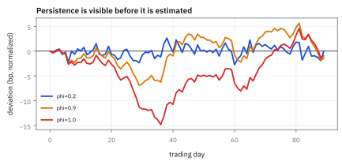
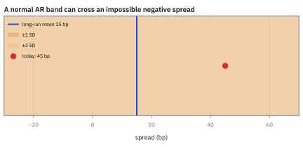
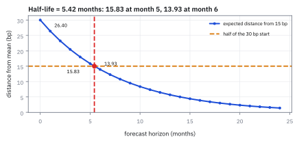
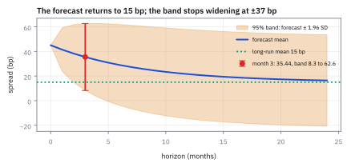

16.2 Autoregressive Processes (AR)
ค่าเดือนนี้คือส่วนหนึ่งของค่าเดือนก่อนบวกข่าวใหม่ สมการบรรทัดเดียวนี้ให้ค่าเฉลี่ยระยะยาว เวลาที่ต้องรอ และความกว้างของคำทำนาย
สเปรดหุ้นกู้สมมติตัวหนึ่งเข้ากับแบบจำลองรายเดือน $X_t=1.8+0.88X_{t-1}+\epsilon_t$ ข่าวใหม่แต่ละเดือนมี SD 9 bp วันนี้สเปรดอยู่ที่ 45 bp นักวิเคราะห์คนหนึ่งบอกว่า “ค่าคงที่คือ 1.8 bp สเปรดตอนนี้กว้างกว่าปกติ 25 เท่า” อีกคนบอกว่า “0.88 แปลว่าหายเดือนละ 12% อีก $1/0.12=8.3$ เดือนก็กลับบ้านหมด” ค่าเฉลี่ยระยะยาว เวลาที่ต้องรอ และคำทำนาย 3 เดือนข้างหน้าคือเท่าไร?
ลองตอบก่อนเปิดเฉลย
ค่าเฉลี่ยระยะยาวคือ 15 bp ไม่ใช่ 1.8 bp สเปรดจึงห่างบ้าน 30 bp ไม่ใช่ 43 bp ระยะห่างหดเหลือครึ่งใน 5.42 เดือน และไม่เคยหายหมด: จะหายไป 90% ต้องใช้ 18.0 เดือน เพราะยิ่งใกล้บ้านแรงดึงยิ่งอ่อน คำทำนาย 3 เดือนคือ 35.44 bp แต่ช่วง 95% กว้างตั้งแต่ 8.3 ถึง 62.6 bp
สิ่งที่เราจะสร้าง
16.1 วัดความจำด้วย ACF หัวข้อนี้สร้างแบบจำลองของความจำแบบที่ง่ายที่สุด: ค่าเดือนนี้เท่ากับส่วนหนึ่งของค่าเดือนก่อน บวกของที่เติมคงที่ บวกข่าวใหม่ที่ไม่มีใครรู้ล่วงหน้า เรียกว่า autoregressive process อันดับหนึ่ง หรือ AR(1) มันเหมาะกับของที่มีแรงดึงกลับ เช่นสเปรดเครดิต ส่วนต่างของคู่เทรดใน 15.4 และระดับความผันผวน
เราจะเดินสมการด้วยมือก่อน แล้วหาทีละอย่าง: ค่าเฉลี่ยระยะยาว ความกว้างระยะยาว คำทำนายกับ half-life ความกว้างของความคลาด และการตัดสินใจเทรดจริง จากนั้นกางสมการย้อนหลังเพื่อดูว่าทำไมต้อง $|\phi|\lt1$ หา ACF ของมัน และสุดท้ายถามว่า $\phi$ ที่ประมาณจากข้อมูล 10 ปีคลาดได้แค่ไหน ตัวเลขสเปรดทั้งหมดเป็นค่าสมมติที่เลือกให้คำนวณง่าย
ศัพท์ที่ใช้ในหัวข้อนี้
- AR(1)
- แบบจำลองที่ค่าปัจจุบันขึ้นกับค่าก่อนหน้าหนึ่งงวดบวกข่าวใหม่ ตัวเลข 1 คือจำนวนงวดที่จำ AR($p$) จำ $p$ งวด ใช้แทนของที่มีแรงดึงกลับหาระดับหนึ่ง
- Mean reversion
- การที่ค่าซึ่งเบี่ยงจากค่าเฉลี่ยระยะยาวถูกดึงกลับทีละส่วน ใช้กำหนดว่าจะถือสถานะนานแค่ไหนและตั้งจุดตัดขาดทุนที่ใด
- Innovation (shock)
- ข่าวใหม่ของงวดนั้นที่คาดจากอดีตไม่ได้ ค่าเฉลี่ยศูนย์ และไม่เกี่ยวกับค่าก่อนหน้า มันคือสิ่งที่ผลักอนุกรมออกจากเส้นทางที่คาดไว้
- Half-life
- เวลาที่ระยะห่างจากค่าเฉลี่ยที่คาดไว้หดเหลือครึ่ง แปลง $\phi$ ที่ไม่มีหน่วยเวลาให้เป็นจำนวนเดือนหรือวันที่คนบนโต๊ะเข้าใจ
- Random walk
- กรณี $\phi=1$ ข่าวเก่าไม่เคยจาง ไม่มีค่าเฉลี่ยระยะยาวให้กลับ และความไม่แน่นอนโตไม่หยุด ใช้เป็นเส้นฐานเทียบกับ AR(1)
- Duration
- ความไวของราคาหุ้นกู้ต่อสเปรด หุ้นกู้ duration 4 ปี ราคาขึ้นราว 4 bp เมื่อสเปรดแคบลง 1 bp ใช้แปลงการขยับของสเปรดเป็นกำไรขาดทุน
- Yule–Walker
- สมการที่เชื่อม ACF กับ parameter ของ AR ใน AR(1) คือ $\rho_k=\phi\rho_{k-1}$ ใช้ประมาณ $\phi$ จาก ACF ที่วัดได้
สัญลักษณ์และหน่วย
| สัญลักษณ์ | ความหมาย | หน่วย |
|---|---|---|
| $X_t$ | สเปรดของเดือนที่ $t$ | bp |
| $c$ | ของที่เติมคงที่ทุกเดือน | bp ต่อเดือน |
| $\phi$ | สัดส่วนของค่าเดือนก่อนที่ยังค้างอยู่ | ไม่มีหน่วย |
| $\epsilon_t,\ \sigma$ | ข่าวใหม่ของเดือนที่ $t$ และ SD ของมัน | bp |
| $\mu,\ V$ | ค่าเฉลี่ยระยะยาว และ variance ระยะยาว | bp และ bp² |
| $Y_t$ | ระยะห่างจากค่าเฉลี่ย $X_t-\mu$ | bp |
| $h,\ h_{1/2}$ | ระยะพยากรณ์ และ half-life | เดือน |
| $\rho_k,\ n$ | ACF ที่ lag $k$ และจำนวนเดือนของข้อมูล | ไม่มีหน่วย และเดือน |
ขั้นที่ 1 — เดินสมการด้วยมือ หกเดือนที่ไม่มีข่าว
ก่อนมีสูตรใด ป้อนตัวเลขของโจทย์เข้าสมการทีละเดือน โดยปิดข่าวใหม่ไว้ก่อน จะได้เห็นว่าสเปรดถูกดึงไปหาเลขไหน และดึงเร็วแค่ไหน
เดือนแรกสเปรดลด 3.6 bp แต่เดือนที่หกลดแค่ 1.9 bp ยิ่งเข้าใกล้บ้าน แรงดึงยิ่งอ่อน เพราะแรงดึงเป็นสัดส่วนกับระยะห่าง นี่คือเหตุที่คำตอบ “8.3 เดือนกลับบ้านหมด” ผิด มันถือว่าลดเท่ากันทุกเดือน
สองแถวล่างคือระยะห่างจาก 15 ซึ่งเหลือ 88% ของเดือนก่อนทุกเดือนพอดี ทำไมต้อง 15 เพราะถ้าเริ่มที่ 15 จะได้ $1.8+0.88(15)=1.8+13.2=15$ อยู่กับที่ ของที่เติม 1.8 กับแรงหด 12% หักล้างกันพอดีที่จุดนี้
ขั้นที่ 2 — เขียนเป็นแบบจำลอง และเงื่อนไขที่กันไม่ให้มันระเบิด
ขั้นที่ 1 ปิดข่าวไว้ ของจริงมีข่าวใหม่ทุกเดือน ใส่มันกลับเข้าไปเป็นก้อนที่สาม บรรทัดแรกคือนิยามของ AR(1) บรรทัดที่สองคือสิ่งที่เราสมมติเกี่ยวกับข่าว บรรทัดที่สามคือเงื่อนไขที่ขั้นที่ 8 จะแสดงที่มา
$c$ คือของที่เติมทุกเดือน $\phi X_{t-1}$ คือความจำที่ลากค่าเดือนก่อนมา 88% และ $\epsilon_t$ คือข่าวใหม่ขนาดราว 9 bp ข่าวของเดือนนี้ไม่เกี่ยวกับค่าเดือนก่อนและไม่เกี่ยวกับข่าวเดือนอื่น
$|\phi|\lt1$ คือเส้นแบ่ง ที่ $\phi=1$ ข่าวเก่าไม่เคยจาง กลายเป็น random walk ที่ $\phi=1.05$ ระยะห่างโต 5% ทุกเดือนจนระเบิด ส่วน $\phi$ ติดลบทำให้ค่าสลับขึ้นลงทุกงวด
Figure 16.2a — ค่า φ เปลี่ยนความจำอย่างไร

ขั้นที่ 3 — ค่าเฉลี่ยระยะยาว: ทำไม 1.8 กลายเป็น 15
ถ้าแบบจำลองนิ่งจริง (16.1) ค่าเฉลี่ยต้องไม่เปลี่ยนตามเวลา เงื่อนไขนี้แก้หาค่าเฉลี่ยได้ทันทีโดยไม่ต้องรู้เส้นทางสักเส้น หาค่าเฉลี่ยทั้งสองข้างของแบบจำลอง แล้วตั้งให้ค่าเฉลี่ยสองเดือนเท่ากัน
บรรทัดแรกมีของไม่รู้ค่าสองตัว คือค่าเฉลี่ยของเดือนนี้กับเดือนก่อน บรรทัดที่สองคือจุดที่ทำให้แก้ได้: stationarity บังคับให้สองตัวเท่ากัน จึงยุบเหลือตัวเดียว ถ้าไม่นิ่งก็ไม่มีค่าเดียวให้แก้ตั้งแต่ต้น
อีกมุมหนึ่ง: ของที่เติมเดือนนี้คือ 1.8 ของเดือนก่อนยังค้าง 88% คือ 1.584 ของสองเดือนก่อนค้าง 1.394 ทบกันไปเรื่อย ๆ รวมเป็น $1.8\times1/0.12=1.8\times8.333=15$ ขั้นที่ 8 จะพิสูจน์ตัวคูณ 8.333 นี้ $c$ จึงไม่ใช่ระดับเฉลี่ย ยิ่ง $\phi$ ใกล้ 1 ตัวคูณยิ่งใหญ่
ขั้นที่ 4 — รูประยะห่าง และความกว้างระยะยาว
ลบค่าเฉลี่ยออกทั้งสองข้าง แบบจำลองจะอยู่ในรูประยะห่างที่สะอาดที่สุด แล้วใช้ตรรกะเดียวกับขั้นที่ 3 กับความกว้าง: ถ้านิ่ง variance ต้องเท่ากันทุกเดือน ขั้นนี้ตอบว่าสเปรดวันนี้ห่างจากปกติกี่ SD
บรรทัดที่สองแทน $c=\mu-\phi\mu$ จากขั้นที่ 3 แล้ว $c$ หายไป บรรทัดที่สี่คือจุดที่ต้องระวัง: variance ของผลรวมเท่ากับผลบวกของ variance ได้เพราะข่าวเดือนนี้ไม่เกี่ยวกับค่าเดือนก่อน และตัวคูณ $\phi$ ออกมาเป็น $\phi^2$ เพราะถ้าเดือนก่อนห่าง 10 bp เดือนนี้ห่าง 8.8 bp ความกว้างหด 0.88 เท่า variance จึงหด 0.7744 เท่า
ข่าวรายเดือนแค่ 9 bp แต่ความกว้างระยะยาว 18.95 bp เพราะข่าวเก่ายังค้างอยู่ ความจำขยายค่าเฉลี่ย 8.33 เท่า แต่ขยาย SD แค่ $1/\sqrt{0.2256}=2.1$ เท่า สเปรดวันนี้อยู่เหนือค่าเฉลี่ย 1.58 SD กว้างผิดปกติแต่ยังไม่สุดโต่ง
ข้อบกพร่องที่ต้องพูดตรง ๆ: ช่วงค่าเฉลี่ย ±2 SD คือ $15\pm37.9$ หรือ −22.9 ถึง 52.9 bp ขอบล่างติดลบ ซึ่งสเปรดหุ้นกู้ทำไม่ได้ ข่าวแบบ Normal บนระดับสเปรดตรง ๆ จึงใช้ได้แค่คร่าว ๆ งานจริงมักฟิต AR บน log ของสเปรด ซึ่งไม่มีวันติดลบ
Figure 16.2b — ค่าเฉลี่ย 15 bp กับแถบ ±1 และ ±2 SD

ขั้นที่ 5 — คำทำนายหลายเดือน และ half-life
ในรูประยะห่าง การทำนายเดือนหน้าเหลือแค่ตัวคูณ เพราะข่าวของเดือนหน้ายังไม่เกิดและค่าเฉลี่ยของมันเป็นศูนย์ ทำซ้ำ $h$ ครั้งก็ได้คำทำนาย $h$ เดือน ตั้ง $Y_t:=X_t-\mu$ ซึ่งวันนี้คือ 30 bp
ตัวเลขตรงกับการเดินมือในขั้นที่ 1 ทุกตัว สูตรปิดดีกว่าการเดินซ้ำตรงที่คำนวณ $\phi^h$ ครั้งเดียว ไม่สะสมเศษจากการปัดทุกก้าว เมื่อ $h$ โตขึ้น $\phi^h$ หดเข้าหาศูนย์ คำทำนายจึงลู่เข้า 15 bp ไม่ใช่ศูนย์
คำถามที่โต๊ะอยากรู้คือ “อีกนานแค่ไหน” ถามว่ากี่เดือนระยะห่างที่คาดไว้จึงเหลือครึ่ง แล้วใส่ log ทั้งสองข้างเพื่อดึงเลขชี้กำลังลงมา
0.88⁵ ยังเหลือเกินครึ่ง 0.88⁶ เลยครึ่งแล้ว คำตอบจึงอยู่ระหว่าง 5 กับ 6 ค่อนไปทาง 5 ตรงกับระยะห่าง 15.83 และ 13.93 bp ในขั้นที่ 1 แถวสุดท้ายคือเวลาที่ระยะห่างหายไป 90% ซึ่งนานกว่า 8.3 เดือนของคำตอบผิดในโจทย์เปิดเกินสองเท่า
ทำไมรายงาน half-life แทน $\phi$: 0.88 รายเดือนกับ 0.88 รายวันคือคนละโลก แต่ half-life พูดเป็นเวลาเสมอ และตรงกับแบบจำลองแรงดึงกลับในเวลาต่อเนื่อง (Ornstein–Uhlenbeck) ของ 15.4 ที่สุ่มดูเดือนละครั้ง ซึ่งให้ $\phi=e^{-\theta}$ ต่อเดือน
Figure 16.2c — ระยะห่างหดครึ่งหนึ่งทุก 5.42 เดือน

ขั้นที่ 6 — คำทำนายคลาดได้กว้างแค่ไหน
คำทำนายอย่างเดียวไม่พอ ต้องรู้ว่ามันพลาดได้กว้างแค่ไหน กางรูประยะห่าง $h$ ก้าว ส่วนที่ไม่ได้อยู่ในคำทำนายคือข่าวทุกก้อนที่ยังไม่เกิด แต่ละก้อนถูกส่งต่อผ่านความจำคนละจำนวนชั้น
ข่าวแต่ละก้อนไม่เกี่ยวกัน variance จึงบวกกันได้ ตัวคูณเข้าไปใน variance เป็น $\phi^{2j}$ แล้วรวมเป็นอนุกรมเรขาคณิต ความคลาดโตเร็วช่วงแรกแล้วช้าลง และชนเพดาน 18.95 bp ซึ่งคือความกว้างระยะยาวของขั้นที่ 4 เพราะข่าวเก่าถูกลืมไป 12% ทุกเดือน
random walk ไม่ลืมอะไรเลย ความคลาดจึงโตไม่หยุด ถึง 31.2 bp ที่ 12 เดือน ทำนายสเปรดหนึ่งปีจึงพอมีความหมาย แต่ทำนายราคาหุ้นหนึ่งปีจากราคาวันนี้ไม่ได้ ช่วง 95% ที่ 3 เดือนกว้าง ±27.18 bp เกือบสามเท่าของการลดที่คาดไว้
Figure 16.2d — คำทำนายกลับหาค่าเฉลี่ย แต่ช่วงความคลาดมีเพดาน

ขั้นที่ 7 — ถือหุ้นกู้รอสเปรดแคบลงคุ้มไหม
โจทย์ให้อะไรมาบ้าง: ซื้อหุ้นกู้ที่ duration 4 ปีวันนี้ที่สเปรด 45 bp แล้วถือ 3 เดือน ใช้คำทำนาย 35.44 bp และ SD ความคลาด 13.87 bp จากขั้นที่ 5–6 ยังไม่รวมดอกเบี้ยที่ได้ระหว่างถือและต้นทุนซื้อขาย สมมติข่าวเป็น Normal
คำตอบ: กำไรที่คาดไว้คือ 0.38% ของราคา แต่ในฉากแย่ที่ขอบบนของช่วง 95% สเปรดกว้างขึ้น 17.6 bp ขาดทุน 0.70% การลดที่คาดไว้เท่ากับ 0.69 SD ของความคลาด โอกาสที่สเปรดอีก 3 เดือนจะต่ำกว่า 45 bp คือราว 75.5% สัญญาณมีจริง แต่เทรดครั้งเดียวแพ้ได้หนึ่งในสี่ครั้ง ต้องทำหลายครั้งหรือหลายตัวจึงเห็นผล และต้องเชื่อว่า $\phi$ ถูก ซึ่งขั้นที่ 10 จะตรวจ
ตรวจเองใน 10 วินาที: $15+0.6815\times30=15+20.44=35.44$ และ $1.96\times13.87=27.19$ ส่วนต่างหลักสุดท้ายกับ 27.18 มาจากการปัด 13.867 เป็น 13.87
ขั้นที่ 8 — กางสมการย้อนหลัง: ที่มาของ |φ| < 1 และตัวคูณ 8.333
ขั้นที่ 3 ใช้ stationarity หาค่าเฉลี่ยโดยไม่เคยถามว่ามันนิ่งจริงไหม ขั้นนี้ตอบ: แทนสมการของเดือนก่อนเข้าไปแทน $X_{t-1}$ ซ้ำ ๆ แล้วดูว่าเหลืออะไร
หลังแทน $k$ ครั้ง ค่าวันนี้แยกเป็นสามก้อน: ของที่เติมสะสม, ค่าในอดีตไกลที่หดด้วย $\phi^k$ และข่าวทุกก้อนที่เคยเกิดถ่วงด้วยความจำ ถ้า $|\phi|\lt1$ ก้อนกลางหายไปเมื่อ $k$ โต ผลรวมของตัวคูณเข้าใกล้ $1/0.12=8.333$ ช้า ๆ และคูณ 1.8 ได้ 15 bp ตรงกับขั้นที่ 3 จากอีกทาง
ถ้า $\phi=1$ ก้อนกลางไม่หาย และข่าวทุกก้อนมีน้ำหนัก 1 เท่ากันตลอดไป variance ของผลรวม $k$ ก้อนคือ $k\sigma^2$ โตไม่หยุด ถ้า $|\phi|\gt1$ ตัวคูณ $\phi^k$ ระเบิด ตัวหาร $1-\phi$ ที่เป็นศูนย์ตอน $\phi=1$ จึงไม่ใช่ข้อบกพร่องของสูตร มันบอกว่า random walk ไม่มีค่าเฉลี่ยให้พูดถึง
บรรทัดสุดท้ายบอกอีกเรื่องที่สำคัญ: AR(1) คือผลรวมของข่าวทั้งหมดในอดีตที่น้ำหนักจางลงแบบเรขาคณิต 16.3 จะเริ่มจากอีกฝั่ง คือเขียนค่าวันนี้เป็นผลรวมของข่าวไม่กี่ก้อนโดยตรง
ขั้นที่ 9 — ACF ของ AR(1) และสมการ Yule–Walker
16.1 วัด ACF จากข้อมูล ถ้าข้อมูลมาจาก AR(1) จริง ACF ต้องมีรูปร่างแบบไหน คูณรูประยะห่างด้วยระยะห่างของ $k$ เดือนก่อนแล้วหาค่าเฉลี่ย
ข่าวของเดือนนี้ไม่เกี่ยวกับอดีตจึงหายไปในบรรทัดที่สอง เหลือความสัมพันธ์ระหว่าง autocovariance ของสอง lag ติดกัน หารด้วย $\gamma_0$ แล้วไล่จาก $\rho_0=1$ ได้ ACF ที่สลายแบบเรขาคณิตด้วยอัตรา $\phi$ ตัวเดียว ข้ามครึ่งระหว่าง lag 5 กับ 6 ตรงกับ half-life
อ่านกลับทางได้: วัด $\hat\rho_1$ จากข้อมูลได้ 0.88 ก็ได้ $\hat\phi=0.88$ นี่คือ Yule–Walker และเป็นเหตุผลว่าทำไม AR(1) อธิบาย ACF ของขนาดใน 16.1 ไม่ได้: ACF นั้นลดเร็วช่วงแรกแล้วลากหางยาว ซึ่งอัตราตัวเดียวสร้างไม่ได้
ขั้นที่ 10 — φ ที่ประมาณจากข้อมูล 10 ปีคลาดได้แค่ไหน
ทุกตัวเลขข้างบนถือว่ารู้ $\phi=0.88$ พอดี ของจริงต้องประมาณจากข้อมูล สมมติมีข้อมูลรายเดือน 10 ปี $n=120$ เดือน $\hat\phi$ คือความชันของ regression ของ $X_t$ บน $X_{t-1}$ ใช้ variance ของความชันจาก 15.1 แล้วแทน $V$ จากขั้นที่ 4
$\sigma^2$ บนล่างตัดกัน ความแม่นของ $\hat\phi$ ขึ้นกับ $\phi$ กับ $n$ เท่านั้น ช่วง 95% ของ $\phi$ ดูแคบ แต่แปลเป็น half-life ได้ตั้งแต่ 3.0 ถึง 19.4 เดือน เพราะใกล้ 1 การขยับ $\phi$ นิดเดียวเปลี่ยน half-life มาก
สูตรนี้เป็นค่าประมาณสำหรับข้อมูลยาว โค้ดท้ายหน้าจึงลองจริง: สร้างประวัติสเปรด 120 เดือนจากแบบจำลองที่ $\phi=0.88$ จำนวน 2,000 ชุด แล้วฟิต $\hat\phi$ ทุกชุด ได้ค่าเฉลี่ย 0.850 ไม่ใช่ 0.88 SD 0.052 และ 90% ของชุดอยู่ระหว่าง 0.752 ถึง 0.922 half-life ที่ประมาณได้จึงอยู่ระหว่าง 2.4 ถึง 8.6 เดือน
การที่ $\hat\phi$ ต่ำกว่าจริงโดยเฉลี่ยราว 0.03 เป็นผลที่รู้กันของข้อมูลสั้นที่ต้องประมาณค่าเฉลี่ยเอง สูตรประมาณคือ $-(1+3\phi)/n=-3.64/120=-0.030$ ตรงกับการจำลอง ข้อมูล 10 ปีจึงมักบอกว่าแรงดึงกลับเร็วกว่าความจริง
คำถามที่ควรถามออกมาดัง ๆ
ถ้าสเปรดจำสองเดือนล่ะ? ใช้ AR(2): $X_t=c+\phi_1X_{t-1}+\phi_2X_{t-2}+\epsilon_t$ ค่าเฉลี่ยได้ด้วยวิธีเดียวกันคือ $c/(1-\phi_1-\phi_2)$ แต่ ACF ไม่ได้ลดด้วยอัตราเดียวอีกต่อไป และอาจแกว่งเป็นคลื่นได้ ซึ่งคือสิ่งที่ Yule ใช้อธิบายรอบจุดดับบนดวงอาทิตย์
ต่างจากการถัว 12 เดือนย้อนหลังอย่างไร? ค่าเฉลี่ย 12 เดือนให้น้ำหนักเท่ากันแล้วตัดทิ้ง AR(1) ให้น้ำหนักข่าวเก่าลดลงแบบเรขาคณิต $\phi^j$ ตามขั้นที่ 8 ไม่มีวันที่ข่าวหลุดออกจากหน้าต่างทันที ความคิดเดียวกันนี้จะกลับมาใน GARCH ของ 16.4
ใช้ AR กับผลตอบแทนหุ้นรายวันได้ไหม? ได้ แต่ 16.1 แสดงว่า $\hat\rho_1$ ของผลตอบแทนแทบเป็นศูนย์ AR(1) จะได้ $\hat\phi$ ใกล้ศูนย์และทำนายแทบไม่ได้ ความจำที่มีอยู่จริงอยู่ในขนาดของการขยับ ไม่ใช่ในระดับ
ความผิดที่ให้คำตอบผิดโดยไม่มีอะไรเตือน
อ่าน $c$ เป็นค่าเฉลี่ย: 1.8 กับ 15 bp ต่างกัน 8.33 เท่า และถ้าคงค่า $c$ ไว้ ค่าเฉลี่ยไวต่อ $\phi$ มาก: $\phi=0.90$ ให้ $1.8/0.10=18$ bp ส่วน $\phi=0.95$ ให้ $1.8/0.05=36$ bp ซึ่งทำให้สเปรด 45 bp แทบไม่ผิดปกติเลย รายงาน $\mu$ กับ half-life ไม่ใช่ $c$ กับ $\phi$
เชื่อ $\hat\phi$ ตัวเดียว: ขั้นที่ 10 แสดงว่าข้อมูล 10 ปีให้ half-life ได้ตั้งแต่ 2.4 ถึง 8.6 เดือนจากแบบจำลองเดียวกัน กลยุทธ์ที่ตั้งจุดออกตาม half-life ต้องทนต่อช่วงนี้ได้
ถือว่า parameter คงที่ตลอดไป: ปี 2008 สเปรดหุ้นกู้กว้างขึ้นหลายร้อย bp แล้วค้างอยู่นาน ไม่ใช่เพราะข่าวก้อนใหญ่ก้อนเดียว แต่เพราะระบอบเปลี่ยนและค่าเฉลี่ยระยะยาวเลื่อน การเดิมพันว่าจะกลับหาค่าเฉลี่ยเก่าคือความเสี่ยงใหญ่ที่สุดของกลยุทธ์กลุ่มนี้ ตรวจค่าประมาณแบบเลื่อนช่วงก่อนใช้
ใช้ทำอะไรบนโต๊ะจริง
AR(1) ให้สามตัวเลขที่โต๊ะเครดิตหรือโต๊ะเทรดคู่ใช้ได้ทันที: ระดับที่ควรเป็น (15 bp), เวลาที่ต้องรอ (5.4 เดือนต่อครึ่งทาง) และความกว้างที่ต้องยอมรับ (±37 bp ระยะยาว) ตัวกลางมีค่าที่สุด เพราะกำหนดขนาดสถานะและจุดออก
กฎที่ใช้กันคือถ้าถือมาสามเท่าของ half-life (ราว 16 เดือน ซึ่งระยะห่างควรเหลือ $0.5^3=12.5\%$) แล้วสเปรดยังไม่ขยับ ให้สงสัยแบบจำลองก่อนสงสัยตลาด AR ยังใช้เป็นแบบจำลองของอัตราดอกเบี้ยระยะสั้น ระดับความผันผวน และเป็นชิ้นส่วนของ ARMA ใน 16.3
สามโจทย์ตรวจความเข้าใจ
1. ส่วนต่างราคาของคู่หุ้นเข้ากับ AR(1) รายวันที่ $\phi=0.95$ half-life กี่วัน?
เฉลย
$\ln0.5/\ln0.95=-0.69315/-0.05129\approx13.51$ วันทำการ ตรวจ: $0.95^{13}=0.513$ ยังเกินครึ่ง $0.95^{14}=0.488$ เลยครึ่ง ถ้าแปลงเป็นเวลาปฏิทินต้องบอกด้วยว่านับวันทำการ
2. AR(1) ที่ $c=2$, $\phi=0.6$, $\sigma=4$ วันนี้ค่าอยู่ที่ 15 จงหาค่าเฉลี่ยระยะยาว SD ระยะยาว คำทำนายสองงวด และ SD ของความคลาดสองงวด
เฉลย
$\mu=2/0.4=5$ และ $\sqrt V=4/\sqrt{1-0.36}=4/0.8=5$ คำทำนายคือ $5+0.6^2(15-5)=5+3.6=8.6$ SD ความคลาดคือ $4\sqrt{1+0.36}\approx4.665$ ใกล้ความกว้างระยะยาว 5 แล้ว เพราะ $\phi=0.6$ ลืมเร็ว
3. AR(1) ที่ $\phi=-0.5$ มี ACF ที่ lag 1, 2, 3 เท่าไร และเส้นทางหน้าตาแบบไหน?
เฉลย
$\rho_k=(-0.5)^k$ คือ −0.5, 0.25, −0.125 เครื่องหมายสลับทุก lag เส้นทางซิกแซ็ก ถ้างวดนี้สูงกว่าค่าเฉลี่ย งวดหน้าคาดว่าต่ำกว่า half-life ใช้ $|\phi|$ ได้ $\ln0.5/\ln0.5=1$ งวด รูปแบบสลับแบบนี้คล้ายการเด้งของราคาระหว่าง bid กับ ask แต่ 16.3 จะแสดงว่าการเด้งเป็นความจำของข่าว ไม่ใช่ของค่า
คำนวณซ้ำด้วย JavaScript
รันใน Node.js ได้โดยไม่ติดตั้งแพ็กเกจ โค้ดปฏิเสธ $|\phi|\ge1$ ซึ่งไม่มีค่าเฉลี่ยระยะยาว ปฏิเสธระยะพยากรณ์ที่ไม่ใช่จำนวนเต็ม เดินสมการจริงเทียบกับสูตรปิด และสร้างประวัติสเปรด 2,000 ชุดด้วยเครื่องสุ่มแบบมี seed เพื่อฟิต $\hat\phi$ แบบขั้นที่ 10 แล้วพิมพ์ทุกตัวเลขของหน้านี้เป็น JSON บรรทัดเดียว
function checkModel({c, phi, sigma}) {
if (![c, phi, sigma].every(Number.isFinite)) throw new TypeError('c, phi and sigma must be finite numbers');
if (!(Math.abs(phi) < 1)) throw new RangeError('Need |phi| < 1 for a stationary AR(1)');
if (!(sigma > 0)) throw new RangeError('Need sigma > 0');
}
// Long-run mean and spread from "the same at every date": mu = c + phi mu, V = phi^2 V + sigma^2.
function longRun(model) {
checkModel(model);
const {c, phi, sigma} = model, variance = sigma * sigma / (1 - phi * phi);
return {mean: c / (1 - phi), variance, sd: Math.sqrt(variance)};
}
function checkHorizon(h) {
if (!Number.isInteger(h) || h < 0) throw new RangeError('Horizon must be a whole number of periods >= 0');
}
// Expected gap shrinks by phi each period; forecast error adds phi^(2j) sigma^2 for each unseen shock.
function forecast(model, x0, h) {
checkHorizon(h);
if (!Number.isFinite(x0)) throw new TypeError('Starting value must be finite');
const {mean} = longRun(model), {phi, sigma} = model;
return {mean: mean + phi ** h * (x0 - mean), sd: sigma * Math.sqrt((1 - phi ** (2 * h)) / (1 - phi * phi))};
}
function halfLife(phi) {
if (!Number.isFinite(phi) || !(Math.abs(phi) < 1)) throw new RangeError('Need |phi| < 1 for a half-life');
return Math.log(0.5) / Math.log(Math.abs(phi));
}
function walkWithoutNews(model, x0, periods) {
checkModel(model); checkHorizon(periods);
const path = [];
let x = x0;
for (let h = 1; h <= periods; h++) { x = model.c + model.phi * x; path.push(x); }
return path;
}
// Least-squares fit of X_t = c + phi X_(t-1) + e_t.
function fitAR1(x) {
if (!Array.isArray(x) || x.length < 3 || ![...x].every(Number.isFinite)) throw new TypeError('Need at least three finite values');
const y = x.slice(1), z = x.slice(0, -1), m = y.length;
const my = y.reduce((s, v) => s + v, 0) / m, mz = z.reduce((s, v) => s + v, 0) / m;
let szy = 0, szz = 0;
for (let i = 0; i < m; i++) { szy += (z[i] - mz) * (y[i] - my); szz += (z[i] - mz) ** 2; }
if (!(szz > 0)) throw new RangeError('Lagged values are constant: phi cannot be fitted');
const phi = szy / szz;
return {c: my - phi * mz, phi};
}
function normals(seed) {
let a = seed >>> 0, spare = null;
const u = () => {
a = (a + 0x6D2B79F5) >>> 0;
let t = Math.imul(a ^ (a >>> 15), a | 1);
t ^= t + Math.imul(t ^ (t >>> 7), t | 61);
return (((t ^ (t >>> 14)) >>> 0) + 0.5) / 4294967296;
};
return () => {
if (spare !== null) { const z = spare; spare = null; return z; }
const radius = Math.sqrt(-2 * Math.log(u())), angle = 2 * Math.PI * u();
spare = radius * Math.sin(angle);
return radius * Math.cos(angle);
};
}
// Many ten-year histories from the true model: how far does the fitted phi land from 0.88?
function fitSpread(model, months, paths, seed) {
if (!Number.isInteger(months) || months < 10 || !Number.isInteger(paths) || paths < 10) throw new RangeError('Need at least 10 months and 10 paths');
const {mean, sd} = longRun(model), z = normals(seed), fits = [];
for (let p = 0; p < paths; p++) {
const x = [mean + sd * z()];
for (let t = 1; t <= months; t++) x.push(model.c + model.phi * x[t - 1] + model.sigma * z());
fits.push(fitAR1(x).phi);
}
fits.sort((a, b) => a - b);
const avg = fits.reduce((s, v) => s + v, 0) / paths;
const spread = Math.sqrt(fits.reduce((s, v) => s + (v - avg) ** 2, 0) / (paths - 1));
return {mean: avg, sd: spread, p05: fits[Math.floor(0.05 * paths)], p95: fits[Math.floor(0.95 * paths)]};
}
// Standard Normal CDF: 0.5 plus the density integrated from 0 to z by Simpson's rule.
function normalCdf(z) {
if (!Number.isFinite(z)) throw new TypeError('z must be finite');
const steps = 2000, w = z / steps, f = t => Math.exp(-t * t / 2) / Math.sqrt(2 * Math.PI);
let s = f(0) + f(z);
for (let i = 1; i < steps; i++) s += (i % 2 ? 4 : 2) * f(i * w);
return 0.5 + s * w / 3;
}
const spread = {c: 1.8, phi: 0.88, sigma: 9}, today = 45;
const run = longRun(spread), seSmall = Math.sqrt((1 - 0.88 ** 2) / 120);
const band = [0.88 - 1.96 * seSmall, 0.88 + 1.96 * seSmall];
const threeMonths = forecast(spread, today, 3), simulated = fitSpread(spread, 120, 2000, 2016);
console.log(JSON.stringify({
longRun: run, z: (today - run.mean) / run.sd, twoSD: [run.mean - 2 * run.sd, run.mean + 2 * run.sd],
walk: walkWithoutNews(spread, today, 6),
halfLife: halfLife(0.88), ninety: Math.log(0.1) / Math.log(0.88), powers: [5, 6].map(k => 0.88 ** k),
forecasts: [1, 3, 6, 12].map(h => forecast(spread, today, h).mean),
errorSD: [1, 2, 3, 6, 12].map(h => forecast(spread, today, h).sd),
interval: [threeMonths.mean - 1.96 * threeMonths.sd, threeMonths.mean + 1.96 * threeMonths.sd],
randomWalkSD: [3, 6, 12].map(h => 9 * Math.sqrt(h)),
partialSums: [1, 2, 5, 10, 20, 50].map(k => (1 - 0.88 ** k) / 0.12),
acf: [1, 2, 3, 5, 6].map(k => 0.88 ** k),
trade: {tighten: today - threeMonths.mean, gain: 4 * (today - threeMonths.mean),
badWiden: threeMonths.mean + 1.96 * threeMonths.sd - today, badLoss: 4 * (threeMonths.mean + 1.96 * threeMonths.sd - today),
perSD: (today - threeMonths.mean) / threeMonths.sd, chanceTighter: normalCdf((today - threeMonths.mean) / threeMonths.sd)},
estimation: {se: seSmall, band, halfLives: band.map(halfLife), simulated,
simulatedHalfLives: [simulated.p05, simulated.mean, simulated.p95].map(halfLife), biasFormula: -(1 + 3 * 0.88) / 120},
fixedC: [0.90, 0.95].map(p => 1.8 / (1 - p)),
exercises: {halfLife95: halfLife(0.95), model: longRun({c: 2, phi: 0.6, sigma: 4}),
twoSteps: forecast({c: 2, phi: 0.6, sigma: 4}, 15, 2), negative: [1, 2, 3].map(k => (-0.5) ** k)}
}));ที่มาที่ไป
ปี 1927 George Udny Yule ต้องอธิบายจำนวนจุดดับบนดวงอาทิตย์ ซึ่งขึ้นลงเป็นรอบราว 11 ปีแต่ไม่สม่ำเสมอ การฟิตคลื่นไซน์คาบตายตัวจึงไม่เข้า เขาใช้ภาพลูกตุ้มนาฬิกาที่มีแรงต้าน ปล่อยไว้มันจะค่อย ๆ หยุด แต่ถ้ามีเด็กแอบยิงเมล็ดถั่วใส่ลูกตุ้มตลอดเวลา ทุกเม็ดผลักให้มันแกว่งต่อและเปลี่ยนจังหวะไปเล็กน้อย รอบที่ไม่สม่ำเสมอจึงเกิดเองโดยไม่ต้องมีคาบบังคับ
แรงดึงลูกตุ้มกลับคือส่วน $\phi X_{t-1}$ เมล็ดถั่วคือ $\epsilon_t$ ปี 1931 Gilbert Walker ซึ่งทำงานพยากรณ์มรสุมอินเดีย ใช้สมการแบบเดียวกันกับข้อมูลความกดอากาศ ความสัมพันธ์ระหว่าง ACF กับ parameter ในขั้นที่ 9 จึงถูกเรียกว่าสมการ Yule–Walker
ข้อจำกัด: วิธีนี้สมมติอะไร และของจริงเป็นอย่างไร
| เรื่อง | วิธีนี้สมมติว่า | ของจริง | ผลเวลาใช้งาน |
|---|---|---|---|
| แรงดึงเป็นเส้นตรง | ดึงเป็นสัดส่วนคงที่ของระยะห่าง | ไกลบ้านมากมักถูกดึงแรงกว่า หรือไม่ถูกดึงเลยในวิกฤต | ความเร็วกลับตัวในภาวะสุดโต่งผิดได้ทั้งสองทาง |
| ค่าเฉลี่ยคงที่ | $\mu$ ไม่เปลี่ยน | ค่าเฉลี่ยเลื่อนตามภาวะเศรษฐกิจและระบอบ | เดิมพันกลับหาค่าเฉลี่ยเก่าแล้วขาดทุนต่อเนื่อง |
| ข่าว Normal | ข่าวสมมาตร ความกว้างคงที่ | สเปรดกว้างขึ้นแบบกระโดด และความผันผวนเปลี่ยนตามเวลา | ช่วงคำทำนายแคบเกินในภาวะตึงเครียด และให้สเปรดติดลบได้ |
| จำงวดเดียว | ใช้ค่าเดือนก่อนตัวเดียว | บางอนุกรมจำหลายงวดหรือจำข่าว | ต้องใช้ AR($p$) หรือ ARMA ใน 16.3 ซึ่งมี parameter ให้ประมาณเพิ่ม |
สิ่งที่ควรตอบได้หลังอ่าน
- AR(1) คือของที่เติมคงที่ บวกความจำ $\phi$ บวกข่าวใหม่ และมีค่าเฉลี่ยระยะยาวเมื่อ $|\phi|\lt1$
- ค่าเฉลี่ยคือ $c/(1-\phi)=15$ bp ไม่ใช่ $c$ ความกว้างคือ $\sigma/\sqrt{1-\phi^2}=18.95$ bp ซึ่งกว้างกว่าข่าวรายเดือน
- ระยะห่างที่คาดไว้หดด้วย $\phi^h$ half-life คือ $\ln0.5/\ln\phi=5.42$ เดือน และไม่เคยหายหมด
- ความคลาดของคำทำนายโตแล้วชนเพดาน ต่างจาก random walk ที่โตไม่หยุด ช่วง 95% ที่ 3 เดือนคือ 8.3 ถึง 62.6 bp
- ACF ของ AR(1) คือ $\phi^k$ และ $\hat\phi$ จากข้อมูล 10 ปีคลาดได้มากพอให้ half-life อยู่ระหว่าง 2.4 ถึง 8.6 เดือน
16.3 ถามคำถามกลับด้าน: ถ้าค่าวันนี้ไม่ได้จำค่าเมื่อวาน แต่จำข่าวของเมื่อวาน ACF จะหน้าตาอย่างไร และการเด้งของราคาระหว่าง bid กับ ask ซ่อนต้นทุนการซื้อขายไว้ใน ACF ได้อย่างไร